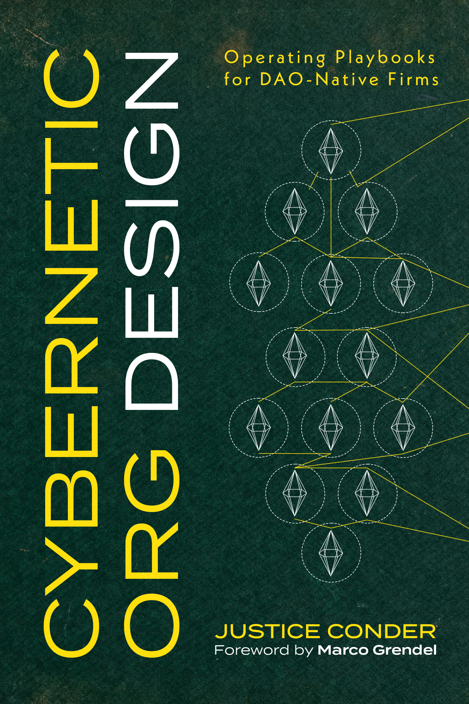

Cybernetic Org Design
Operating Playbooks for DAO-Native Firms
A field guide for treating DAOs as digitally native firms and programmable coordination engines.
“A must-read for anyone building the future of coordination.” — Author Name
What’s inside
From 2020 to 2024, DAOs captured the imagination of builders who believed programmable organizations could rewrite human coordination. The hype has cooled, but the ideas and lessons deserve preservation. This book is a refined compendium of DAO writings from that era, updated with the clarity of hindsight—treating DAOs through the lens of IT infrastructure: organizations you design like software.
Written for the next generation of builders who will revisit these ideas with better tools and discipline, Cybernetic Org Design is a practical companion for anyone who wants to treat digital organizations as systems to design.
Programmable coordination
Design stakeholder segmentation, incentive flows, and governance rules as executable systems—not policy docs.
Organizations as code
Roles, permissions, and policies as programmable interfaces. Test them, iterate them, automate them.
Coordination game design
Build multiplayer systems where incentives align with outcomes. Less manual governance, more self-executing structure.
Smart contract primitives
Governance modules, treasury systems, token mechanics, execution patterns—the building blocks of on-chain firms.